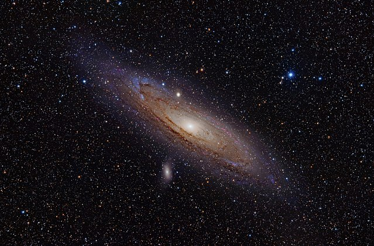

Guia das galáxias
Galáxia de Andromeda
Descrição
A galáxia de Andrômeda (Messier 31, NGC 224) é uma galáxia espiral localizada a cerca de 2,54 milhões de anos-luz de distância da terra, na direção da constelação de Andrômeda
Dados Interessantes
- Além da Via Láctea, é a galáxia mais estudada
- Suas duas galáxias satélite, Messier 32 e Messier 110, são visíveis em binóculos
- Sua distância em relação à Terra ainda não foi bem definida